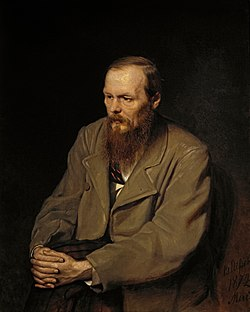
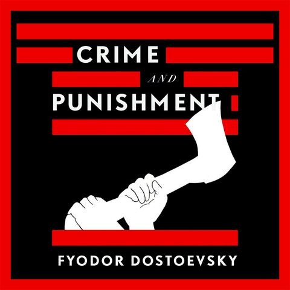

სასჯელი და დანაშაული
ინფორმაცია წიგნზე
ავტორი: ფიოდორ დოსტოევსკი
ჟანრი: კრიმინალური, ფსიქოლოგიური, ფილოსოფიური
გამოშვების თარიღი: 1866 წელი
აღწერა:
სასოწარკვეთილი ახალგაზრდა გეგმავს სრულყოფილ დანაშაულს - საზიზღარი
ლომბარდის, მოხუცი ქალების მკვლელობას, რომელიც არავის უყვარს და არავინ
გლოვობს. ჩაითვლება დანაშაულად თუ ადამიანი დაარღვევს მორალურ კანონს და
ჩაიდენს ისეთ დანაშაულს, რომელიც საბოლოოდ სარგებლობას მოუტანს
კაცობრიობას? ასე იწყება ერთ-ერთი უდიდესი რომანი. ძლიერი ფსიქოლოგიური
კვლევა, შემზარავი მკვლელობის საიდუმლო, მომხიბლავი დეტექტიური თრილერი,
გაჟღენთილი ფილოსოფიური, რელიგიური და სოციალური კომენტარებით.
რასკოლნიკოვი, გაღატაკებული სტუდენტი, რომელიც ცხოვრობს
სანკტ-პეტერბურგის პირქუშ უღელტეხილში, ახორციელებს თავის გროტესკულ
სქემას და ჩაეფლო დევნის, სიგიჟისა და ტერორის ჯოჯოხეთში. დანაშაული და
სასჯელი მკითხველს მიჰყავს კრიმინალური და გარყვნილი გონების ყველაზე
ბნელ უფსკრულებში და ამხელს როგორც სიკეთით, ასევე ბოროტებით შეპყრობილი
ადამიანის სულს. . . ადამიანი, რომელიც ვერ გაექცევა საკუთარ სინდისს.
ავტორი: ფიოდორ მიკაილოვიჩ დოსტოევსკის ცხოვრება ისეთივე ბნელი და
დრამატული იყო, როგორც მის მიერ დაწერილი დიდი რომანები. იგი დაიბადა
მოსკოვში 1821 წელს. მოკლე პირველმა რომანმა,"საწყალი ადამიანები"
(1846), მას მყისიერი წარმატება მოუტანა, მაგრამ მისი სამწერლო კარიერა
შეწყდა 1849 წელს ცარ ნიკოლოზ I-ის წინააღმდეგ სავარაუდო დივერსიის გამო
დაპატიმრების გამო. მისი ციხის გამოცდილება და ღრმად რელიგიურ
ფილოსოფიაზე გადასვლამ საფუძველი ჩაუყარა მის დიდ რომანებს. მაგრამ ეს
იყო მისი შემთხვევითი ქორწინება ანა სნიტკინასთან, მისი იძულებითი
აზარტული თამაშებით გამოწვეული სრული სიღარიბის პერიოდის შემდეგ, რამაც
დოსტოევსკის მისცა ემოციური სტაბილურობა, რათა დაესრულებინა "დანაშაული
და სასჯელი" (1866), "იდიოტი" (1868-1869), "ეშმაკნი" (1871-1872) და
ძმები კარამაზოვები (1879-1880). როდესაც დოსტოევსკი გარდაიცვალა 1881
წელს, მან დატოვა შედევრების მემკვიდრეობა, რომელმაც გავლენა მოახდინა
დასავლური სამყაროს დიდ მოაზროვნეებსა და მწერლებზე და უკვდავყო იგი,
როგორც გიგანტი მსოფლიო ლიტერატურის მწერლებს შორის.
ავტორის ხელმოწერა: